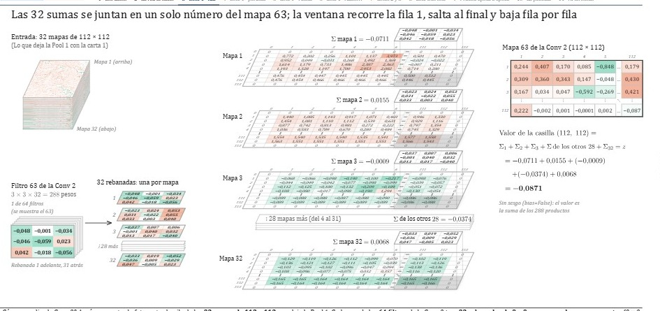

Machine learning desde cero
Machine learning por dentro, paso a paso y con los números reales.
Lecciones animadas de machine learning: cómo entra un dato, cómo se multiplica y se suma capa por capa, y cómo aprende la red. Cada operación en su orden, con su ecuación y con los datos de verdad.
Ficha del proyecto
Temas5
Lecciones publicadas2
Pasos animados381
Idiomaespañol
AutorOmar Ramírez González
Índice general
Temas de machine learning
| N.º | Tema | Contenido | Estado |
|---|---|---|---|
| 01 | Fundamentos | Regresión lineal y logística, la pérdida, el descenso de gradiente. | en preparación |
| 02 | Redes neuronales | La neurona, las capas densas, el backward con la regla de la cadena. | en preparación |
| 03 | Redes convolucionales | Filtros, mapas, pooling y cómo una red lee una imagen. | 1 lección |
| 04 | Detección de objetos | Cajas, puntajes, IoU, NMS y la familia YOLO. | 1 lección |
| 05 | Modelos de lenguaje | Del bigrama a los transformers. | en preparación |
Últimas lecciones
Lecciones publicadas

Lección 04.1 · Detección de objetos
Mini-YOLO por dentro: dígitos en la calle
Una red pequeña al estilo YOLO aprende a encontrar dígitos sobre fotos reales de la calle.
pasos186 + 66
datos12.000 escenas por época
épocas30

Lección 03.1 · Redes convolucionales
La CNN completa, por dentro
Una LeNet-5 aprende a leer dígitos: lotes reales, pérdida, backward capa por capa y AdamW.
pasos86 + 43
datos55.000 imágenes MNIST
épocas5
ProyectoKet Cero · ketcero.com
AutorO. Ramírez G.
RevisiónA · 2026-11
Hoja01 / 01